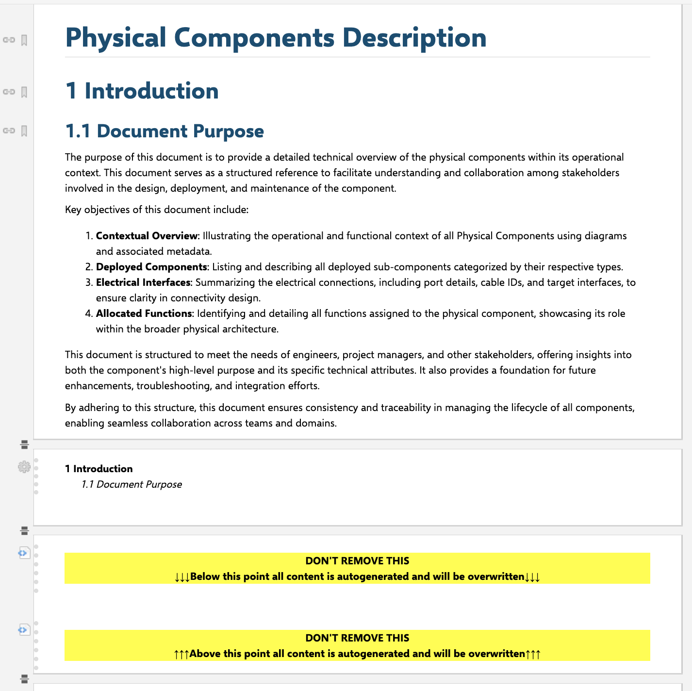
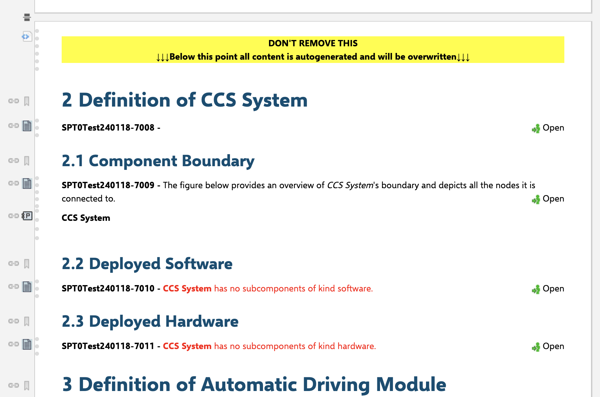
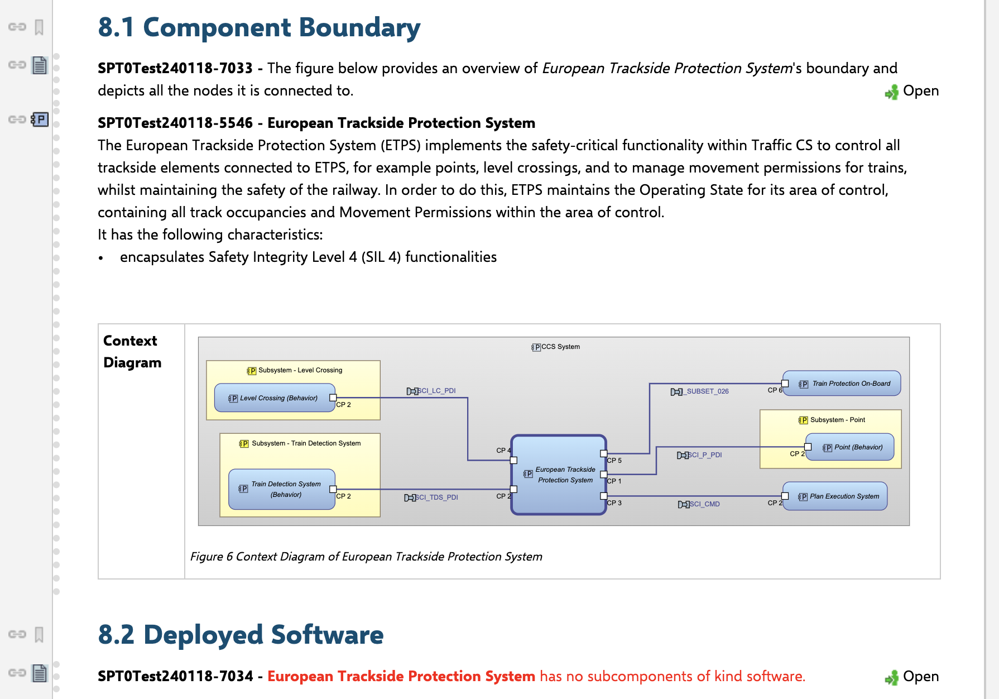

3. How to develop and debug a mixed authorized Polarion LiveDoc¶
Welcome to the capella2polarion notebook where local development and debugging of an MA Polarion LiveDoc is showcased. Mixed-authorized means, that we have a live document with sections enhanced by generated content from the model sync or directly from the model. The possibilities are endless.
For MA LiveDocs you will need a pre-existing document. In there we need to declare sections for auto generated content. The macro can be copied from the documentation of Mixed Authority document rendering.
This notebook will show you the following:
How to render and maintain auto generated sections in a pre-existing Polarion livedoc
How to configure the
capella2polarion_document_config.yaml.j2for pipeline usage
As always before we can interact with the REST API of Polarion we need to prepare our environment: Inside an .env file there are the following values:
POLARION_PROJECT
POLARION_HOST
POLARION_PAT
MODEL_PATH
[1]:
import os
import pathlib
import capellambse
import dotenv
from capella2polarion.connectors import polarion_worker
from capella2polarion.converters import document_config, document_renderer
dotenv.load_dotenv()
test_data_path = pathlib.Path("../../../tests/data")
model = capellambse.MelodyModel(
os.environ.get("MODEL_PATH")
or str(test_data_path / "model/Melody Model Test.aird")
)
worker = polarion_worker.CapellaPolarionWorker(
polarion_worker.PolarionWorkerParams(
os.environ.get("POLARION_PROJECT") or "",
os.environ.get("POLARION_HOST") or "",
os.environ.get("POLARION_PAT") or "",
delete_work_items=False,
)
)
renderer = document_renderer.DocumentRenderer(
worker.polarion_data_repo,
model,
os.environ.get("POLARION_PROJECT") or "",
overwrite_heading_numbering=True,
overwrite_layouts=True,
)
Don’t forget to load the current work items from the sync into the worker, because we need them for references. If a work item isn’t synced but a reference inserted in a live doc then the renderer will tell: Missing UUID: XXX-... in the rendering.
[2]:
worker.load_polarion_work_item_map()
Now we load the current LiveDoc under the specific space MA-Drafts. This is configured in the document config ma_capella2polarion_document_config.yaml:
[3]:
document_rendering_config_path = pathlib.Path(
"configs/ma_capella2polarion_document_config.yaml.j2"
)
print(document_rendering_config_path.read_text(encoding="utf8"))
# Copyright DB InfraGO AG and contributors
# SPDX-License-Identifier: Apache-2.0
mixed_authority:
- template_directory: document_templates
heading_numbering: True
project_id: SPT0Test240118
work_item_layouts:
_C2P_physicalLink:
fields_at_start:
- id
_C2P_physicalActor:
fields_at_start:
- id
_C2P_physicalComponentNode:
fields_at_start:
- id
fields_at_end:
- context_diagram
_C2P_physicalComponentBehavior:
fields_at_start:
- id
fields_at_end:
- context_diagram
_C2P_physicalFunction:
fields_at_start:
- id
fields_at_end:
- context_diagram
_C2P_physicalPort:
fields_at_start:
- id
sections:
PCDContent: test-pcd-mixed-auth.html.j2
instances:
- polarion_space: MA-Drafts
polarion_name: Physical Components Description
params:
kinds:
- SOFTWARE
- HARDWARE
You can see that we even provide a project_id. So projects outside of the C2P sync project are targetable for enhancing MA Live Docs with generated sections. This only works if the PAT has access (REST-API) to this Polarion project.
Now you can see that we have currently one section PCDContent configured and the only instance (target Live Doc) is Physical System Spec - MA Showcase. Let’s have a look into the template test-pcd-mixed-auth.html.j2 for now:
3.1. Polarion Jinja2 template for MA LiveDocs¶
[22]:
print(
pathlib.Path("document_templates/test-pcd-mixed-auth.html.j2").read_text(
encoding="utf8"
)
)
{#
Copyright DB InfraGO AG and contributors
SPDX-License-Identifier: Apache-2.0
#}
{% from 'common-macros.j2' import deployed_components %}
{% from 'polarion-props.j2' import table_attributes, th_attributes, td_attributes %}
{% for physical_component in model.search("PhysicalComponent") | unique(attribute="uuid") %}
{{ heading(2, "Definition of " + physical_component.name, session) }}
<workitem id="description-{{ loop.index }}">{{ physical_component.description | safe }}</workitem>
{{ heading(3, "Component Boundary", session) }}
<workitem id="context-{{ loop.index }}">
The figure below provides an overview of <i>{{ physical_component.name }}</i>'s boundary and depicts all the nodes it is connected to.
</workitem>
{{ insert_work_item(physical_component, session) }}
{% for kind in kinds %}
{{ deployed_components(physical_component, kind, "Deployed " + kind.capitalize(), 3, session) }}
{% endfor %}
{% endfor %}
We import the macro deployed_components from the common-macros Jinja2 template. This is a way to keep your templates short and precise. It definitely makes sense to divide the concerns of function declarations and template logic. Additional quirks are also imported for Polarion handling the tables correctly. Then for now we have a simple logic implemented for our PhysicalComponents. For each component we define the following:
h2 with the name of the component included
a text work item including the component’s description
h3 and a work item reference to the current component
another for loop displaying subcomponents of a certain kind (we only allow SOFTWARE and HARDWARE from the config)
Emphasize on some details that seem minor but break the rendering:
<workitem id="description-{{ loop.index }}">
IDs of work items in a Live-Doc need to be unique. With this statement the renderer will create a new work item of type text and the id set here. With loop.index we get the ID unique.
Pretty simple. Let’s see the code for the macro and then we render this in Polarion:
[24]:
print(
pathlib.Path("document_templates/common-macros.j2").read_text(
encoding="utf8"
)
)
{#
Copyright DB InfraGO AG and contributors
SPDX-License-Identifier: Apache-2.0
#}
{% macro deployed_components(pc, kind, title, level, session) %}
{% set components = [] %}
{% for comp in pc.components %}
{% if comp.kind == kind %}
{% set _ = components.append(comp) %}
{% endif %}
{% endfor %}
{{ heading(level, title, session) }}
{% if components %}
<workitem id="deployed-components-{{ pc.uuid }}-{{ kind }}">
{{- pc.name }} has the following {{ kind.lower() }} components deployed:
</workitem>
{% for component in components %}
{{ insert_work_item(component, session) }}
{% endfor %}
{% else %}
<workitem id="deployed-components-{{ pc.uuid }}-{{ kind }}">
<span style="color: red;"><b>{{- pc.name }}</b> has no subcomponents of kind {{ kind.lower() }}.</span>
</workitem>
{% endif %}
{% endmacro %}
Same here again:
<workitem id="deployed-components-{{ pc.uuid }}-{{ kind }}">
With a clever combination of the parameters we get the ID unique. Think about how the macro gets called and adjust the template code accordingly.
Now let’s look at what we need to do for preparing the Live Doc in Polarion:
The wiki macros you can copy from the documentation. It should look like this
<div class="c2pAreaStart" id="PCDContent">
#set($statusList = ["doc_open", "draft", "planned", "inReview"])
#if ($statusList.contains($document.getStatus().id))
<p style="font-weight: bold;background-color: #FFFF00;text-align: center;">
DON'T REMOVE THIS<br>
↓↓↓Below this point all content is autogenerated and will be overwritten↓↓↓
</p>
#end
</div>
It is important that the ID matches with the one set in the config and also the class is c2pAreaStart for the section initializer and c2pAreaEnd for the section end.
If you want to know more about the features and limitations, head into the documentation of the configuration for MA live doc rendering.
3.2. How to load the current Polarion LiveDoc and update it¶
Just the same way like we did in the FA LiveDoc showcase:
[4]:
with document_rendering_config_path.open("r", encoding="utf8") as file:
configs = document_config.read_config_file(file, model)
documents = worker.load_polarion_documents(configs.iterate_documents())
projects_document_data = renderer.render_documents(configs, documents)
for project, project_data in projects_document_data.items():
worker.create_documents(project_data.new_docs, project)
worker.update_documents(project_data.updated_docs, project)
This brings us to:
We should enable context_diagrams for the referenced work items:
[25]:
document_rendering_config_path = pathlib.Path(
"configs/ma_capella2polarion_document_config.yaml.j2"
)
print(document_rendering_config_path.read_text(encoding="utf8"))
# Copyright DB InfraGO AG and contributors
# SPDX-License-Identifier: Apache-2.0
mixed_authority:
- template_directory: document_templates
heading_numbering: True
project_id: SPT0Test240118
work_item_layouts:
_C2P_physicalLink:
fields_at_start:
- id
_C2P_physicalActor:
fields_at_start:
- id
_C2P_physicalComponentNode:
fields_at_start:
- id
fields_at_end:
- context_diagram
_C2P_physicalComponentBehavior:
fields_at_start:
- id
fields_at_end:
- context_diagram
_C2P_physicalFunction:
fields_at_start:
- id
fields_at_end:
- context_diagram
_C2P_physicalPort:
fields_at_start:
- id
sections:
PCDContent: test-pcd-mixed-auth.html.j2
instances:
- polarion_space: MA-Drafts
polarion_name: Physical Components Description
params:
kinds:
- SOFTWARE
- HARDWARE
[26]:
with document_rendering_config_path.open("r", encoding="utf8") as file:
configs = document_config.read_config_file(file, model)
documents = worker.load_polarion_documents(configs.iterate_documents())
projects_document_data = renderer.render_documents(configs, documents)
for project, project_data in projects_document_data.items():
worker.create_documents(project_data.new_docs, project)
worker.update_documents(project_data.updated_docs, project)
This brings us:
Be advanteagous and define new sections. Iterate over other attributes of the capellambse object and use the documentation of py-capellambse.
3.2.1. How can I investigate the rendered HTML?¶
[15]:
document = (
projects_document_data[os.environ["POLARION_PROJECT"]]
.updated_docs[0]
.document
)
print(document.home_page_content.value)
<h1 id="polarion_wiki macro name=module-workitem;params=id=SPT0Test240118-6718"></h1>
<h2 id="polarion_wiki macro name=module-workitem;params=id=SPT0Test240118-6716"></h2>
<h3 id="polarion_wiki macro name=module-workitem;params=id=SPT0Test240118-6717"></h3>
<p id="polarion_1">The purpose of this document is to provide a detailed technical overview of the physical components within its operational context. This document serves as a structured reference to facilitate understanding and collaboration among stakeholders involved in the design, deployment, and maintenance of the component.</p>
<p id="polarion_2">Key objectives of this document include:</p>
<ol id="polarion_3">
<li><span style="font-weight: bold;">Contextual Overview</span>: Illustrating the operational and functional context of all Physical Components using diagrams and associated metadata.</li>
<li><span style="font-weight: bold;">Deployed Components</span>: Listing and describing all deployed sub-components categorized by their respective types.</li>
<li><span style="font-weight: bold;">Electrical Interfaces</span>: Summarizing the electrical connections, including port details, cable IDs, and target interfaces, to ensure clarity in connectivity design.</li>
<li><span style="font-weight: bold;">Allocated Functions</span>: Identifying and detailing all functions assigned to the physical component, showcasing its role within the broader physical architecture.</li>
</ol>
<p id="polarion_4">This document is structured to meet the needs of engineers, project managers, and other stakeholders, offering insights into both the component's high-level purpose and its specific technical attributes. It also provides a foundation for future enhancements, troubleshooting, and integration efforts.</p>
<p id="polarion_5">By adhering to this structure, this document ensures consistency and traceability in managing the lifecycle of all components, enabling seamless collaboration across teams and domains.</p>
<div id="polarion_wiki macro name=page_break;params=uid=6" contenteditable="false" data-is-landscape="false"></div>
<div id="polarion_wiki macro name=toc"></div>
<p id="polarion_7"></p>
<div id="polarion_wiki macro name=page_break;params=uid=8" contenteditable="false" data-is-landscape="false"></div>
<div id="polarion_editor_html_block9" class="polarion-dle-wiki-block">
<div id="polarion_editor_html_block_content" contenteditable="false"></div><pre id="polarion_editor_html_block_source" class="polarion-dle-wiki-block-source" contenteditable="false"><div class="c2pAreaStart" id="PCDContent">
#set($statusList = ["doc_open", "draft", "planned", "inReview"])
#if ($statusList.contains($document.getStatus().id))
<p style="font-weight: bold;background-color: #FFFF00;text-align: center;">
DON'T REMOVE THIS<br>
↓↓↓Below this point all content is autogenerated and will be overwritten↓↓↓
</p>
#end
</div></pre>
</div>
<h2 id="polarion_wiki macro name=module-workitem;params=id=SPT0Test240118-7132"></h2>
<div id="polarion_wiki macro name=module-workitem;params=id=SPT0Test240118-7008|layout=0|external=true"></div>
<h3 id="polarion_wiki macro name=module-workitem;params=id=SPT0Test240118-7133"></h3>
<div id="polarion_wiki macro name=module-workitem;params=id=SPT0Test240118-7009|layout=0|external=true"></div>
<div id="polarion_wiki macro name=module-workitem;params=id=SPT0Test240118-5538|layout=7|external=true"></div>
<h3 id="polarion_wiki macro name=module-workitem;params=id=SPT0Test240118-7134"></h3>
<div id="polarion_wiki macro name=module-workitem;params=id=SPT0Test240118-7010|layout=0|external=true"></div>
<h3 id="polarion_wiki macro name=module-workitem;params=id=SPT0Test240118-7135"></h3>
<div id="polarion_wiki macro name=module-workitem;params=id=SPT0Test240118-7011|layout=0|external=true"></div>
<h2 id="polarion_wiki macro name=module-workitem;params=id=SPT0Test240118-7136"></h2>
<div id="polarion_wiki macro name=module-workitem;params=id=SPT0Test240118-7012|layout=0|external=true"></div>
<h3 id="polarion_wiki macro name=module-workitem;params=id=SPT0Test240118-7137"></h3>
<div id="polarion_wiki macro name=module-workitem;params=id=SPT0Test240118-7013|layout=0|external=true"></div>
<div id="polarion_wiki macro name=module-workitem;params=id=SPT0Test240118-5545|layout=4|external=true"></div>
<h3 id="polarion_wiki macro name=module-workitem;params=id=SPT0Test240118-7138"></h3>
<div id="polarion_wiki macro name=module-workitem;params=id=SPT0Test240118-7014|layout=0|external=true"></div>
<h3 id="polarion_wiki macro name=module-workitem;params=id=SPT0Test240118-7139"></h3>
<div id="polarion_wiki macro name=module-workitem;params=id=SPT0Test240118-7015|layout=0|external=true"></div>
<h2 id="polarion_wiki macro name=module-workitem;params=id=SPT0Test240118-7140"></h2>
<div id="polarion_wiki macro name=module-workitem;params=id=SPT0Test240118-7016|layout=0|external=true"></div>
<h3 id="polarion_wiki macro name=module-workitem;params=id=SPT0Test240118-7141"></h3>
<div id="polarion_wiki macro name=module-workitem;params=id=SPT0Test240118-7017|layout=0|external=true"></div>
<div id="polarion_wiki macro name=module-workitem;params=id=SPT0Test240118-5783|layout=4|external=true"></div>
<h3 id="polarion_wiki macro name=module-workitem;params=id=SPT0Test240118-7142"></h3>
<div id="polarion_wiki macro name=module-workitem;params=id=SPT0Test240118-7018|layout=0|external=true"></div>
<h3 id="polarion_wiki macro name=module-workitem;params=id=SPT0Test240118-7143"></h3>
<div id="polarion_wiki macro name=module-workitem;params=id=SPT0Test240118-7019|layout=0|external=true"></div>
<h2 id="polarion_wiki macro name=module-workitem;params=id=SPT0Test240118-7144"></h2>
<div id="polarion_wiki macro name=module-workitem;params=id=SPT0Test240118-7020|layout=0|external=true"></div>
<h3 id="polarion_wiki macro name=module-workitem;params=id=SPT0Test240118-7145"></h3>
<div id="polarion_wiki macro name=module-workitem;params=id=SPT0Test240118-7021|layout=0|external=true"></div>
<div id="polarion_wiki macro name=module-workitem;params=id=SPT0Test240118-5782|layout=4|external=true"></div>
<h3 id="polarion_wiki macro name=module-workitem;params=id=SPT0Test240118-7146"></h3>
<div id="polarion_wiki macro name=module-workitem;params=id=SPT0Test240118-7022|layout=0|external=true"></div>
<h3 id="polarion_wiki macro name=module-workitem;params=id=SPT0Test240118-7147"></h3>
<div id="polarion_wiki macro name=module-workitem;params=id=SPT0Test240118-7023|layout=0|external=true"></div>
<h2 id="polarion_wiki macro name=module-workitem;params=id=SPT0Test240118-7148"></h2>
<div id="polarion_wiki macro name=module-workitem;params=id=SPT0Test240118-7024|layout=0|external=true"></div>
<h3 id="polarion_wiki macro name=module-workitem;params=id=SPT0Test240118-7149"></h3>
<div id="polarion_wiki macro name=module-workitem;params=id=SPT0Test240118-7025|layout=0|external=true"></div>
<div id="polarion_wiki macro name=module-workitem;params=id=SPT0Test240118-5547|layout=4|external=true"></div>
<h3 id="polarion_wiki macro name=module-workitem;params=id=SPT0Test240118-7150"></h3>
<div id="polarion_wiki macro name=module-workitem;params=id=SPT0Test240118-7026|layout=0|external=true"></div>
<h3 id="polarion_wiki macro name=module-workitem;params=id=SPT0Test240118-7151"></h3>
<div id="polarion_wiki macro name=module-workitem;params=id=SPT0Test240118-7027|layout=0|external=true"></div>
<h2 id="polarion_wiki macro name=module-workitem;params=id=SPT0Test240118-7152"></h2>
<div id="polarion_wiki macro name=module-workitem;params=id=SPT0Test240118-7028|layout=0|external=true"></div>
<h3 id="polarion_wiki macro name=module-workitem;params=id=SPT0Test240118-7153"></h3>
<div id="polarion_wiki macro name=module-workitem;params=id=SPT0Test240118-7029|layout=0|external=true"></div>
<div id="polarion_wiki macro name=module-workitem;params=id=SPT0Test240118-5781|layout=4|external=true"></div>
<h3 id="polarion_wiki macro name=module-workitem;params=id=SPT0Test240118-7154"></h3>
<div id="polarion_wiki macro name=module-workitem;params=id=SPT0Test240118-7030|layout=0|external=true"></div>
<h3 id="polarion_wiki macro name=module-workitem;params=id=SPT0Test240118-7155"></h3>
<div id="polarion_wiki macro name=module-workitem;params=id=SPT0Test240118-7031|layout=0|external=true"></div>
<h2 id="polarion_wiki macro name=module-workitem;params=id=SPT0Test240118-7156"></h2>
<div id="polarion_wiki macro name=module-workitem;params=id=SPT0Test240118-7032|layout=0|external=true"></div>
<h3 id="polarion_wiki macro name=module-workitem;params=id=SPT0Test240118-7157"></h3>
<div id="polarion_wiki macro name=module-workitem;params=id=SPT0Test240118-7033|layout=0|external=true"></div>
<div id="polarion_wiki macro name=module-workitem;params=id=SPT0Test240118-5546|layout=4|external=true"></div>
<h3 id="polarion_wiki macro name=module-workitem;params=id=SPT0Test240118-7158"></h3>
<div id="polarion_wiki macro name=module-workitem;params=id=SPT0Test240118-7034|layout=0|external=true"></div>
<h3 id="polarion_wiki macro name=module-workitem;params=id=SPT0Test240118-7159"></h3>
<div id="polarion_wiki macro name=module-workitem;params=id=SPT0Test240118-7035|layout=0|external=true"></div>
<h2 id="polarion_wiki macro name=module-workitem;params=id=SPT0Test240118-7160"></h2>
<div id="polarion_wiki macro name=module-workitem;params=id=SPT0Test240118-7036|layout=0|external=true"></div>
<h3 id="polarion_wiki macro name=module-workitem;params=id=SPT0Test240118-7161"></h3>
<div id="polarion_wiki macro name=module-workitem;params=id=SPT0Test240118-7037|layout=0|external=true"></div>
<div id="polarion_wiki macro name=module-workitem;params=id=SPT0Test240118-5540|layout=4|external=true"></div>
<h3 id="polarion_wiki macro name=module-workitem;params=id=SPT0Test240118-7162"></h3>
<div id="polarion_wiki macro name=module-workitem;params=id=SPT0Test240118-7038|layout=0|external=true"></div>
<h3 id="polarion_wiki macro name=module-workitem;params=id=SPT0Test240118-7163"></h3>
<div id="polarion_wiki macro name=module-workitem;params=id=SPT0Test240118-7039|layout=0|external=true"></div>
<h2 id="polarion_wiki macro name=module-workitem;params=id=SPT0Test240118-7164"></h2>
<div id="polarion_wiki macro name=module-workitem;params=id=SPT0Test240118-7040|layout=0|external=true"></div>
<h3 id="polarion_wiki macro name=module-workitem;params=id=SPT0Test240118-7165"></h3>
<div id="polarion_wiki macro name=module-workitem;params=id=SPT0Test240118-7041|layout=0|external=true"></div>
<div id="polarion_wiki macro name=module-workitem;params=id=SPT0Test240118-5549|layout=4|external=true"></div>
<h3 id="polarion_wiki macro name=module-workitem;params=id=SPT0Test240118-7166"></h3>
<div id="polarion_wiki macro name=module-workitem;params=id=SPT0Test240118-7042|layout=0|external=true"></div>
<h3 id="polarion_wiki macro name=module-workitem;params=id=SPT0Test240118-7167"></h3>
<div id="polarion_wiki macro name=module-workitem;params=id=SPT0Test240118-7043|layout=0|external=true"></div>
<h2 id="polarion_wiki macro name=module-workitem;params=id=SPT0Test240118-7168"></h2>
<div id="polarion_wiki macro name=module-workitem;params=id=SPT0Test240118-7044|layout=0|external=true"></div>
<h3 id="polarion_wiki macro name=module-workitem;params=id=SPT0Test240118-7169"></h3>
<div id="polarion_wiki macro name=module-workitem;params=id=SPT0Test240118-7045|layout=0|external=true"></div>
<div id="polarion_wiki macro name=module-workitem;params=id=SPT0Test240118-5784|layout=3|external=true"></div>
<h3 id="polarion_wiki macro name=module-workitem;params=id=SPT0Test240118-7170"></h3>
<div id="polarion_wiki macro name=module-workitem;params=id=SPT0Test240118-7046|layout=0|external=true"></div>
<h3 id="polarion_wiki macro name=module-workitem;params=id=SPT0Test240118-7171"></h3>
<div id="polarion_wiki macro name=module-workitem;params=id=SPT0Test240118-7047|layout=0|external=true"></div>
<h2 id="polarion_wiki macro name=module-workitem;params=id=SPT0Test240118-7172"></h2>
<div id="polarion_wiki macro name=module-workitem;params=id=SPT0Test240118-7048|layout=0|external=true"></div>
<h3 id="polarion_wiki macro name=module-workitem;params=id=SPT0Test240118-7173"></h3>
<div id="polarion_wiki macro name=module-workitem;params=id=SPT0Test240118-7049|layout=0|external=true"></div>
<div id="polarion_wiki macro name=module-workitem;params=id=SPT0Test240118-5551|layout=4|external=true"></div>
<h3 id="polarion_wiki macro name=module-workitem;params=id=SPT0Test240118-7174"></h3>
<div id="polarion_wiki macro name=module-workitem;params=id=SPT0Test240118-7050|layout=0|external=true"></div>
<h3 id="polarion_wiki macro name=module-workitem;params=id=SPT0Test240118-7175"></h3>
<div id="polarion_wiki macro name=module-workitem;params=id=SPT0Test240118-7051|layout=0|external=true"></div>
<h2 id="polarion_wiki macro name=module-workitem;params=id=SPT0Test240118-7176"></h2>
<div id="polarion_wiki macro name=module-workitem;params=id=SPT0Test240118-7052|layout=0|external=true"></div>
<h3 id="polarion_wiki macro name=module-workitem;params=id=SPT0Test240118-7177"></h3>
<div id="polarion_wiki macro name=module-workitem;params=id=SPT0Test240118-7053|layout=0|external=true"></div>
<div id="polarion_wiki macro name=module-workitem;params=id=SPT0Test240118-5785|layout=3|external=true"></div>
<h3 id="polarion_wiki macro name=module-workitem;params=id=SPT0Test240118-7178"></h3>
<div id="polarion_wiki macro name=module-workitem;params=id=SPT0Test240118-7054|layout=0|external=true"></div>
<div id="polarion_wiki macro name=module-workitem;params=id=SPT0Test240118-5552|layout=4|external=true"></div>
<h3 id="polarion_wiki macro name=module-workitem;params=id=SPT0Test240118-7179"></h3>
<div id="polarion_wiki macro name=module-workitem;params=id=SPT0Test240118-7055|layout=0|external=true"></div>
<h2 id="polarion_wiki macro name=module-workitem;params=id=SPT0Test240118-7180"></h2>
<div id="polarion_wiki macro name=module-workitem;params=id=SPT0Test240118-7056|layout=0|external=true"></div>
<h3 id="polarion_wiki macro name=module-workitem;params=id=SPT0Test240118-7181"></h3>
<div id="polarion_wiki macro name=module-workitem;params=id=SPT0Test240118-7057|layout=0|external=true"></div>
<p><span class="polarion-rte-link" data-type="workItem" id="fake" data-scope="SPT0Test240118" data-item-id="SPT0Test240118-5552" data-option-id="long"></span></p>
<h3 id="polarion_wiki macro name=module-workitem;params=id=SPT0Test240118-7182"></h3>
<div id="polarion_wiki macro name=module-workitem;params=id=SPT0Test240118-7058|layout=0|external=true"></div>
<h3 id="polarion_wiki macro name=module-workitem;params=id=SPT0Test240118-7183"></h3>
<div id="polarion_wiki macro name=module-workitem;params=id=SPT0Test240118-7059|layout=0|external=true"></div>
<h2 id="polarion_wiki macro name=module-workitem;params=id=SPT0Test240118-7184"></h2>
<div id="polarion_wiki macro name=module-workitem;params=id=SPT0Test240118-7060|layout=0|external=true"></div>
<h3 id="polarion_wiki macro name=module-workitem;params=id=SPT0Test240118-7185"></h3>
<div id="polarion_wiki macro name=module-workitem;params=id=SPT0Test240118-7061|layout=0|external=true"></div>
<div id="polarion_wiki macro name=module-workitem;params=id=SPT0Test240118-5786|layout=3|external=true"></div>
<h3 id="polarion_wiki macro name=module-workitem;params=id=SPT0Test240118-7186"></h3>
<div id="polarion_wiki macro name=module-workitem;params=id=SPT0Test240118-7062|layout=0|external=true"></div>
<h3 id="polarion_wiki macro name=module-workitem;params=id=SPT0Test240118-7187"></h3>
<div id="polarion_wiki macro name=module-workitem;params=id=SPT0Test240118-7063|layout=0|external=true"></div>
<h2 id="polarion_wiki macro name=module-workitem;params=id=SPT0Test240118-7188"></h2>
<div id="polarion_wiki macro name=module-workitem;params=id=SPT0Test240118-7064|layout=0|external=true"></div>
<h3 id="polarion_wiki macro name=module-workitem;params=id=SPT0Test240118-7189"></h3>
<div id="polarion_wiki macro name=module-workitem;params=id=SPT0Test240118-7065|layout=0|external=true"></div>
<div id="polarion_wiki macro name=module-workitem;params=id=SPT0Test240118-5550|layout=4|external=true"></div>
<h3 id="polarion_wiki macro name=module-workitem;params=id=SPT0Test240118-7190"></h3>
<div id="polarion_wiki macro name=module-workitem;params=id=SPT0Test240118-7066|layout=0|external=true"></div>
<h3 id="polarion_wiki macro name=module-workitem;params=id=SPT0Test240118-7191"></h3>
<div id="polarion_wiki macro name=module-workitem;params=id=SPT0Test240118-7067|layout=0|external=true"></div>
<h2 id="polarion_wiki macro name=module-workitem;params=id=SPT0Test240118-7192"></h2>
<div id="polarion_wiki macro name=module-workitem;params=id=SPT0Test240118-7068|layout=0|external=true"></div>
<h3 id="polarion_wiki macro name=module-workitem;params=id=SPT0Test240118-7193"></h3>
<div id="polarion_wiki macro name=module-workitem;params=id=SPT0Test240118-7069|layout=0|external=true"></div>
<div id="polarion_wiki macro name=module-workitem;params=id=SPT0Test240118-6772|layout=3|external=true"></div>
<h3 id="polarion_wiki macro name=module-workitem;params=id=SPT0Test240118-7194"></h3>
<div id="polarion_wiki macro name=module-workitem;params=id=SPT0Test240118-7070|layout=0|external=true"></div>
<div id="polarion_wiki macro name=module-workitem;params=id=SPT0Test240118-6773|layout=4|external=true"></div>
<h3 id="polarion_wiki macro name=module-workitem;params=id=SPT0Test240118-7195"></h3>
<div id="polarion_wiki macro name=module-workitem;params=id=SPT0Test240118-7071|layout=0|external=true"></div>
<h2 id="polarion_wiki macro name=module-workitem;params=id=SPT0Test240118-7196"></h2>
<div id="polarion_wiki macro name=module-workitem;params=id=SPT0Test240118-7072|layout=0|external=true"></div>
<h3 id="polarion_wiki macro name=module-workitem;params=id=SPT0Test240118-7197"></h3>
<div id="polarion_wiki macro name=module-workitem;params=id=SPT0Test240118-7073|layout=0|external=true"></div>
<p><span class="polarion-rte-link" data-type="workItem" id="fake" data-scope="SPT0Test240118" data-item-id="SPT0Test240118-6773" data-option-id="long"></span></p>
<h3 id="polarion_wiki macro name=module-workitem;params=id=SPT0Test240118-7198"></h3>
<div id="polarion_wiki macro name=module-workitem;params=id=SPT0Test240118-7074|layout=0|external=true"></div>
<h3 id="polarion_wiki macro name=module-workitem;params=id=SPT0Test240118-7199"></h3>
<div id="polarion_wiki macro name=module-workitem;params=id=SPT0Test240118-7075|layout=0|external=true"></div>
<h2 id="polarion_wiki macro name=module-workitem;params=id=SPT0Test240118-7200"></h2>
<div id="polarion_wiki macro name=module-workitem;params=id=SPT0Test240118-7076|layout=0|external=true"></div>
<h3 id="polarion_wiki macro name=module-workitem;params=id=SPT0Test240118-7201"></h3>
<div id="polarion_wiki macro name=module-workitem;params=id=SPT0Test240118-7077|layout=0|external=true"></div>
<div id="polarion_wiki macro name=module-workitem;params=id=SPT0Test240118-6774|layout=4|external=true"></div>
<h3 id="polarion_wiki macro name=module-workitem;params=id=SPT0Test240118-7202"></h3>
<div id="polarion_wiki macro name=module-workitem;params=id=SPT0Test240118-7078|layout=0|external=true"></div>
<h3 id="polarion_wiki macro name=module-workitem;params=id=SPT0Test240118-7203"></h3>
<div id="polarion_wiki macro name=module-workitem;params=id=SPT0Test240118-7079|layout=0|external=true"></div>
<h2 id="polarion_wiki macro name=module-workitem;params=id=SPT0Test240118-7204"></h2>
<div id="polarion_wiki macro name=module-workitem;params=id=SPT0Test240118-7080|layout=0|external=true"></div>
<h3 id="polarion_wiki macro name=module-workitem;params=id=SPT0Test240118-7205"></h3>
<div id="polarion_wiki macro name=module-workitem;params=id=SPT0Test240118-7081|layout=0|external=true"></div>
<div id="polarion_wiki macro name=module-workitem;params=id=SPT0Test240118-5541|layout=4|external=true"></div>
<h3 id="polarion_wiki macro name=module-workitem;params=id=SPT0Test240118-7206"></h3>
<div id="polarion_wiki macro name=module-workitem;params=id=SPT0Test240118-7082|layout=0|external=true"></div>
<h3 id="polarion_wiki macro name=module-workitem;params=id=SPT0Test240118-7207"></h3>
<div id="polarion_wiki macro name=module-workitem;params=id=SPT0Test240118-7083|layout=0|external=true"></div>
<h2 id="polarion_wiki macro name=module-workitem;params=id=SPT0Test240118-7208"></h2>
<div id="polarion_wiki macro name=module-workitem;params=id=SPT0Test240118-7084|layout=0|external=true"></div>
<h3 id="polarion_wiki macro name=module-workitem;params=id=SPT0Test240118-7209"></h3>
<div id="polarion_wiki macro name=module-workitem;params=id=SPT0Test240118-7085|layout=0|external=true"></div>
<div id="polarion_wiki macro name=module-workitem;params=id=SPT0Test240118-5542|layout=4|external=true"></div>
<h3 id="polarion_wiki macro name=module-workitem;params=id=SPT0Test240118-7210"></h3>
<div id="polarion_wiki macro name=module-workitem;params=id=SPT0Test240118-7086|layout=0|external=true"></div>
<h3 id="polarion_wiki macro name=module-workitem;params=id=SPT0Test240118-7211"></h3>
<div id="polarion_wiki macro name=module-workitem;params=id=SPT0Test240118-7087|layout=0|external=true"></div>
<h2 id="polarion_wiki macro name=module-workitem;params=id=SPT0Test240118-7212"></h2>
<div id="polarion_wiki macro name=module-workitem;params=id=SPT0Test240118-7088|layout=0|external=true"></div>
<h3 id="polarion_wiki macro name=module-workitem;params=id=SPT0Test240118-7213"></h3>
<div id="polarion_wiki macro name=module-workitem;params=id=SPT0Test240118-7089|layout=0|external=true"></div>
<div id="polarion_wiki macro name=module-workitem;params=id=SPT0Test240118-5543|layout=4|external=true"></div>
<h3 id="polarion_wiki macro name=module-workitem;params=id=SPT0Test240118-7214"></h3>
<div id="polarion_wiki macro name=module-workitem;params=id=SPT0Test240118-7090|layout=0|external=true"></div>
<h3 id="polarion_wiki macro name=module-workitem;params=id=SPT0Test240118-7215"></h3>
<div id="polarion_wiki macro name=module-workitem;params=id=SPT0Test240118-7091|layout=0|external=true"></div>
<h2 id="polarion_wiki macro name=module-workitem;params=id=SPT0Test240118-7216"></h2>
<div id="polarion_wiki macro name=module-workitem;params=id=SPT0Test240118-7092|layout=0|external=true"></div>
<h3 id="polarion_wiki macro name=module-workitem;params=id=SPT0Test240118-7217"></h3>
<div id="polarion_wiki macro name=module-workitem;params=id=SPT0Test240118-7093|layout=0|external=true"></div>
<div id="polarion_wiki macro name=module-workitem;params=id=SPT0Test240118-5544|layout=4|external=true"></div>
<h3 id="polarion_wiki macro name=module-workitem;params=id=SPT0Test240118-7218"></h3>
<div id="polarion_wiki macro name=module-workitem;params=id=SPT0Test240118-7094|layout=0|external=true"></div>
<h3 id="polarion_wiki macro name=module-workitem;params=id=SPT0Test240118-7219"></h3>
<div id="polarion_wiki macro name=module-workitem;params=id=SPT0Test240118-7095|layout=0|external=true"></div>
<h2 id="polarion_wiki macro name=module-workitem;params=id=SPT0Test240118-7220"></h2>
<div id="polarion_wiki macro name=module-workitem;params=id=SPT0Test240118-7096|layout=0|external=true"></div>
<h3 id="polarion_wiki macro name=module-workitem;params=id=SPT0Test240118-7221"></h3>
<div id="polarion_wiki macro name=module-workitem;params=id=SPT0Test240118-7097|layout=0|external=true"></div>
<div id="polarion_wiki macro name=module-workitem;params=id=SPT0Test240118-5553|layout=2|external=true"></div>
<h3 id="polarion_wiki macro name=module-workitem;params=id=SPT0Test240118-7222"></h3>
<div id="polarion_wiki macro name=module-workitem;params=id=SPT0Test240118-7098|layout=0|external=true"></div>
<h3 id="polarion_wiki macro name=module-workitem;params=id=SPT0Test240118-7223"></h3>
<div id="polarion_wiki macro name=module-workitem;params=id=SPT0Test240118-7099|layout=0|external=true"></div>
<h2 id="polarion_wiki macro name=module-workitem;params=id=SPT0Test240118-7224"></h2>
<div id="polarion_wiki macro name=module-workitem;params=id=SPT0Test240118-7100|layout=0|external=true"></div>
<h3 id="polarion_wiki macro name=module-workitem;params=id=SPT0Test240118-7225"></h3>
<div id="polarion_wiki macro name=module-workitem;params=id=SPT0Test240118-7101|layout=0|external=true"></div>
<div id="polarion_wiki macro name=module-workitem;params=id=SPT0Test240118-5554|layout=2|external=true"></div>
<h3 id="polarion_wiki macro name=module-workitem;params=id=SPT0Test240118-7226"></h3>
<div id="polarion_wiki macro name=module-workitem;params=id=SPT0Test240118-7102|layout=0|external=true"></div>
<h3 id="polarion_wiki macro name=module-workitem;params=id=SPT0Test240118-7227"></h3>
<div id="polarion_wiki macro name=module-workitem;params=id=SPT0Test240118-7103|layout=0|external=true"></div>
<h2 id="polarion_wiki macro name=module-workitem;params=id=SPT0Test240118-7228"></h2>
<div id="polarion_wiki macro name=module-workitem;params=id=SPT0Test240118-7104|layout=0|external=true"></div>
<h3 id="polarion_wiki macro name=module-workitem;params=id=SPT0Test240118-7229"></h3>
<div id="polarion_wiki macro name=module-workitem;params=id=SPT0Test240118-7105|layout=0|external=true"></div>
<div id="polarion_wiki macro name=module-workitem;params=id=SPT0Test240118-5555|layout=2|external=true"></div>
<h3 id="polarion_wiki macro name=module-workitem;params=id=SPT0Test240118-7230"></h3>
<div id="polarion_wiki macro name=module-workitem;params=id=SPT0Test240118-7106|layout=0|external=true"></div>
<h3 id="polarion_wiki macro name=module-workitem;params=id=SPT0Test240118-7231"></h3>
<div id="polarion_wiki macro name=module-workitem;params=id=SPT0Test240118-7107|layout=0|external=true"></div>
<h2 id="polarion_wiki macro name=module-workitem;params=id=SPT0Test240118-7232"></h2>
<div id="polarion_wiki macro name=module-workitem;params=id=SPT0Test240118-7108|layout=0|external=true"></div>
<h3 id="polarion_wiki macro name=module-workitem;params=id=SPT0Test240118-7233"></h3>
<div id="polarion_wiki macro name=module-workitem;params=id=SPT0Test240118-7109|layout=0|external=true"></div>
<div id="polarion_wiki macro name=module-workitem;params=id=SPT0Test240118-5556|layout=2|external=true"></div>
<h3 id="polarion_wiki macro name=module-workitem;params=id=SPT0Test240118-7234"></h3>
<div id="polarion_wiki macro name=module-workitem;params=id=SPT0Test240118-7110|layout=0|external=true"></div>
<h3 id="polarion_wiki macro name=module-workitem;params=id=SPT0Test240118-7235"></h3>
<div id="polarion_wiki macro name=module-workitem;params=id=SPT0Test240118-7111|layout=0|external=true"></div>
<h2 id="polarion_wiki macro name=module-workitem;params=id=SPT0Test240118-7236"></h2>
<div id="polarion_wiki macro name=module-workitem;params=id=SPT0Test240118-7112|layout=0|external=true"></div>
<h3 id="polarion_wiki macro name=module-workitem;params=id=SPT0Test240118-7237"></h3>
<div id="polarion_wiki macro name=module-workitem;params=id=SPT0Test240118-7113|layout=0|external=true"></div>
<div id="polarion_wiki macro name=module-workitem;params=id=SPT0Test240118-5557|layout=2|external=true"></div>
<h3 id="polarion_wiki macro name=module-workitem;params=id=SPT0Test240118-7238"></h3>
<div id="polarion_wiki macro name=module-workitem;params=id=SPT0Test240118-7114|layout=0|external=true"></div>
<h3 id="polarion_wiki macro name=module-workitem;params=id=SPT0Test240118-7239"></h3>
<div id="polarion_wiki macro name=module-workitem;params=id=SPT0Test240118-7115|layout=0|external=true"></div>
<h2 id="polarion_wiki macro name=module-workitem;params=id=SPT0Test240118-7240"></h2>
<div id="polarion_wiki macro name=module-workitem;params=id=SPT0Test240118-7116|layout=0|external=true"></div>
<h3 id="polarion_wiki macro name=module-workitem;params=id=SPT0Test240118-7241"></h3>
<div id="polarion_wiki macro name=module-workitem;params=id=SPT0Test240118-7117|layout=0|external=true"></div>
<div id="polarion_wiki macro name=module-workitem;params=id=SPT0Test240118-5558|layout=2|external=true"></div>
<h3 id="polarion_wiki macro name=module-workitem;params=id=SPT0Test240118-7242"></h3>
<div id="polarion_wiki macro name=module-workitem;params=id=SPT0Test240118-7118|layout=0|external=true"></div>
<h3 id="polarion_wiki macro name=module-workitem;params=id=SPT0Test240118-7243"></h3>
<div id="polarion_wiki macro name=module-workitem;params=id=SPT0Test240118-7119|layout=0|external=true"></div>
<h2 id="polarion_wiki macro name=module-workitem;params=id=SPT0Test240118-7244"></h2>
<div id="polarion_wiki macro name=module-workitem;params=id=SPT0Test240118-7120|layout=0|external=true"></div>
<h3 id="polarion_wiki macro name=module-workitem;params=id=SPT0Test240118-7245"></h3>
<div id="polarion_wiki macro name=module-workitem;params=id=SPT0Test240118-7121|layout=0|external=true"></div>
<div id="polarion_wiki macro name=module-workitem;params=id=SPT0Test240118-5559|layout=2|external=true"></div>
<h3 id="polarion_wiki macro name=module-workitem;params=id=SPT0Test240118-7246"></h3>
<div id="polarion_wiki macro name=module-workitem;params=id=SPT0Test240118-7122|layout=0|external=true"></div>
<h3 id="polarion_wiki macro name=module-workitem;params=id=SPT0Test240118-7247"></h3>
<div id="polarion_wiki macro name=module-workitem;params=id=SPT0Test240118-7123|layout=0|external=true"></div>
<h2 id="polarion_wiki macro name=module-workitem;params=id=SPT0Test240118-7248"></h2>
<div id="polarion_wiki macro name=module-workitem;params=id=SPT0Test240118-7124|layout=0|external=true"></div>
<h3 id="polarion_wiki macro name=module-workitem;params=id=SPT0Test240118-7249"></h3>
<div id="polarion_wiki macro name=module-workitem;params=id=SPT0Test240118-7125|layout=0|external=true"></div>
<div id="polarion_wiki macro name=module-workitem;params=id=SPT0Test240118-5560|layout=2|external=true"></div>
<h3 id="polarion_wiki macro name=module-workitem;params=id=SPT0Test240118-7250"></h3>
<div id="polarion_wiki macro name=module-workitem;params=id=SPT0Test240118-7126|layout=0|external=true"></div>
<h3 id="polarion_wiki macro name=module-workitem;params=id=SPT0Test240118-7251"></h3>
<div id="polarion_wiki macro name=module-workitem;params=id=SPT0Test240118-7127|layout=0|external=true"></div>
<h2 id="polarion_wiki macro name=module-workitem;params=id=SPT0Test240118-7252"></h2>
<div id="polarion_wiki macro name=module-workitem;params=id=SPT0Test240118-7128|layout=0|external=true"></div>
<h3 id="polarion_wiki macro name=module-workitem;params=id=SPT0Test240118-7253"></h3>
<div id="polarion_wiki macro name=module-workitem;params=id=SPT0Test240118-7129|layout=0|external=true"></div>
<div id="polarion_wiki macro name=module-workitem;params=id=SPT0Test240118-5787|layout=2|external=true"></div>
<h3 id="polarion_wiki macro name=module-workitem;params=id=SPT0Test240118-7254"></h3>
<div id="polarion_wiki macro name=module-workitem;params=id=SPT0Test240118-7130|layout=0|external=true"></div>
<h3 id="polarion_wiki macro name=module-workitem;params=id=SPT0Test240118-7255"></h3>
<div id="polarion_wiki macro name=module-workitem;params=id=SPT0Test240118-7131|layout=0|external=true"></div>
<div id="polarion_editor_html_block11" class="polarion-dle-wiki-block">
<div id="polarion_editor_html_block_content" contenteditable="false"></div><pre id="polarion_editor_html_block_source" class="polarion-dle-wiki-block-source" contenteditable="false"><div class="c2pAreaEnd" id="PCDContent">
#set($statusList = ["doc_open", "draft", "planned", "inReview"])
#if ($statusList.contains($document.getStatus().id))
<p style="font-weight: bold;background-color: #FFFF00;text-align: center;">
DON'T REMOVE THIS<br>
↑↑↑Above this point all content is autogenerated and will be overwritten↑↑↑
</p>
#end
</div></pre>
</div>
<p id="polarion_12"></p>
<div id="polarion_wiki macro name=page_break;params=uid=13" contenteditable="false" data-is-landscape="false"></div>
<div data-sequence="Figure" id="polarion_wiki macro name=tof;params=uid=14"></div>
<p id="polarion_15"></p>